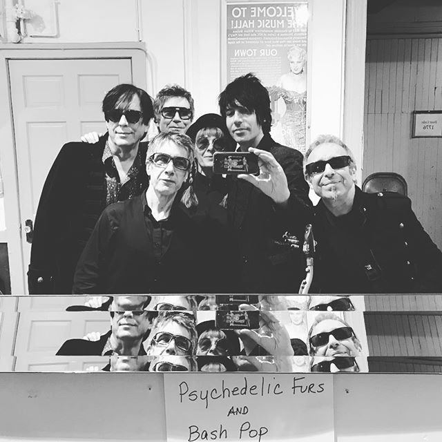

About
If you sit and talk to many of the alternative rock artists dominating today’s music, you’ll find that many of them pay homage to the The Psychedelic Furs. Led by front man and songwriter Richard Butler, the Furs won over fans and critics alike by combining poetic lyrics, innovative rhythms and melodies driven by an aggressive, punk desperation. Through it all, the band scored major hits with "Love My Way," "Pretty In Pink," "Heaven," "The Ghost In You," and “Heartbreak Beat” in all releasing seven studio albums.
The Psychedelic Furs came together in England's emerging punk scene in 1977 initially consisting of Richard Butler (vocals), Tim Butler (bass guitar), Paul Wilson (drums), Duncan Kilburn (saxophone), and Roger Morris (guitars). By 1979, this line up had expanded to a sextet with Vince Ely replacing Wilson on drums and John Ashton being added on guitar.
These days, the band continues to tour around the world. The current Psychedelic Furs touring lineup remains Richard Butler (vocals), Tim Butler (bass), Rich Good (guitar), Mars Williams (saxophone), Amanda Kramer (keyboards), and Paul Garisto (drums).